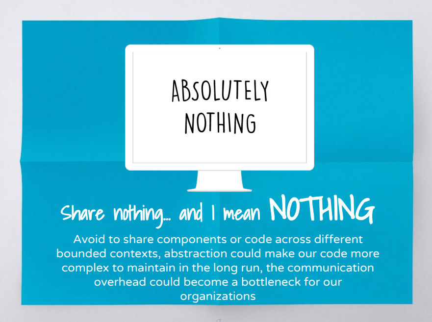

Micro Frontends

What's the problem now

Monolith project

Monolith project
- Innovation in legacy code base
- Huge team working on same product
- Microservice backend but a monolith frontend
- Idea: Only refactor part of the page and do the integration
TW Tech Radia
- Nov 2016, Assess
- Nov 2017, Trial
- Apr 2019, Adopt
Definition
"An architectural style where independently deliverable frontend applications are composed into a greater whole"
Pros of micro frontends
- Smaller, more cohesive and maintainable codebases
- More scalable organisations with decoupled, autonomous teams
- The ability to upgrade, update, or even rewrite parts of the frontend in a more incremental fashion than was previously possible
Incremental upgrades
- Instead of rewrite the whole application
- Refactor piece by piece
Simple, decoupled codebases
- Smaller code base is easy to work with
- Force to decouple the logic between parts application
- Sharing domain models across bounded contexts becomes more difficult
Independent deployment

Independent deployment
- Each micro frontend should have its own continuous delivery pipeline
- It shouldn't matter if the old monolith is on a fixed, manual, quarterly release cycle
- Independent release cycles
Autonomous teams
- Teams can have full ownership of everything they need
- Move quickly and effectively
Autonomous teams

In a nutshell
- Slicing up big and scary things into smaller, more manageable pieces
- Explicit about the dependencies
- Release and manage the process people without excessive coordination
Requirement Example

Container application

Container application
- Render page level components
- Manage routing/authentication
- Manage other micro frontends
Different Patterns
Server-side template composition

Server-side template composition
<body>
<h1>Feed me</h1>
<!--# include file="$PAGE.html" -->
</body>
server {
listen 8080;
...
location /browse {
set $PAGE 'browse';
}
location /order {
set $PAGE 'order';
}
}
Build-time integration
{
"name": "@feed-me/container",
"version": "1.0.0",
"description": "A food delivery web app",
"dependencies": {
"@feed-me/browse-restaurants": "^1.2.3",
"@feed-me/order-food": "^4.5.6",
"@feed-me/user-profile": "^7.8.9"
}
}
- Release together 😅
Run-time integration via iframes
<body>
<h1>Welcome to Feed me!</h1>
<iframe id="micro-frontend-container"></iframe>
<script type="text/javascript">
const microFrontendsByRoute = {
'/': 'https://browse.example.com/index.html',
'/order-food': 'https://order.example.com/index.html',
'/user-profile': 'https://profile.example.com/index.html',
};
const iframe = document.getElementById('micro-frontend-container');
iframe.src = microFrontendsByRoute[window.location.pathname];
</script>
</body>
Run-time integration via iframes
- Difficult to build integrations between different parts
- Routing, history, and deep-linking more complicated
Run-time integration via JavaScript
<body>
<h1>Welcome to Feed me!</h1>
<!-- These scripts don't render anything immediately -->
<!-- Instead they attach entry-point functions to `window` -->
<script src="https://browse.example.com/bundle.js"></script>
<script src="https://order.example.com/bundle.js"></script>
<script src="https://profile.example.com/bundle.js"></script>
<div id="micro-frontend-root"></div>
<script type="text/javascript">
// These global functions are attached to window by the above scripts
const microFrontendsByRoute = {
'/': window.renderBrowseRestaurants,
'/order-food': window.renderOrderFood,
'/user-profile': window.renderUserProfile,
};
const renderFunction = microFrontendsByRoute[window.location.pathname];
// Having determined the entry-point function, we now call it,
// giving it the ID of the element where it should render itself
renderFunction('micro-frontend-root');
</script>
</body>
Run-time integration via JavaScript
- flexibility of integration
- can be lazyloaded
- default choice
Run-time integration via Web Components
<body>
<h1>Welcome to Feed me!</h1>
<!-- These scripts don't render anything immediately -->
<!-- Instead they each define a custom element type -->
<script src="https://browse.example.com/bundle.js"></script>
<script src="https://order.example.com/bundle.js"></script>
<script src="https://profile.example.com/bundle.js"></script>
<div id="micro-frontend-root"></div>
<script type="text/javascript">
// These element types are defined by the above scripts
const webComponentsByRoute = {
'/': 'micro-frontend-browse-restaurants',
'/order-food': 'micro-frontend-order-food',
'/user-profile': 'micro-frontend-user-profile',
};
const webComponentType = webComponentsByRoute[window.location.pathname];
// Having determined the right web component custom element type,
// we now create an instance of it and attach it to the document
const root = document.getElementById('micro-frontend-root');
const webComponent = document.createElement(webComponentType);
root.appendChild(webComponent);
</script>
</body>
Run-time integration via Web Components
- The web component way
- Browser compatibility(IE??)
CSS
- global, inheriting, and cascading
- no module system, namespacing or encapsulation
How to avoid
- BEM
- SASS with nested namespace
- CSS Modules
- Shadow DOM
- CSS in JS
Shared component libraries
- Visual consistency across micro frontends
- A living styleguide between developers and designers
- Difficult to do well
Non-stable components API
- Framework like components
- Define the API before real-world usage
- Teams create their own components first
- Extract duplicate code into a shared library
Logic in shared component library
- Dumb UI component
- UI logic like dropdown/auto complete
- Business logic like ProductTablet?
Ownership and governance
- Who own the library? everyone? no one?
- Centralised development team?
- Anyone can contribute to the library, but have a admin person
- Ensuring the quality, consistency, and validity
Cross-application communication
Avoid too many communicate
How
- Custom events
- Container component as a birdge(Just like react/redux)
- Address bar
Avoid share state
- Just like sharing a database across microservices
- Create massive amounts of coupling
Some Other Thoughts
Backend communication

Authentication
- Own by container component
- Have a login form in container component
- Inject token to each micro frontends
Demo Time

Free Lunch?
There are no free lunches when it comes to software architecture - everything comes with a cost.
Payload Size
- What's the library we need to share
- Share more library or less library
- Download js ahead vs lazyload by each micro frontends
Different micro frontends integration with container
- Spend time on integration or spend time on "standalone" mode to develop
Operational and governance complexity
- Enough automation for infrastructure?
- Will your project have many micro frontends?
- Tooling and development practices will be decentralised?
- Quality, consistency, or governance across your many independent frontend codebases?
Conclusion
We need to be able to draw clear boundaries that establish the right levels of coupling and cohesion between technical and domain entities.
We should be able to scale software delivery across independent, autonomous teams.
Q&A
Thanks